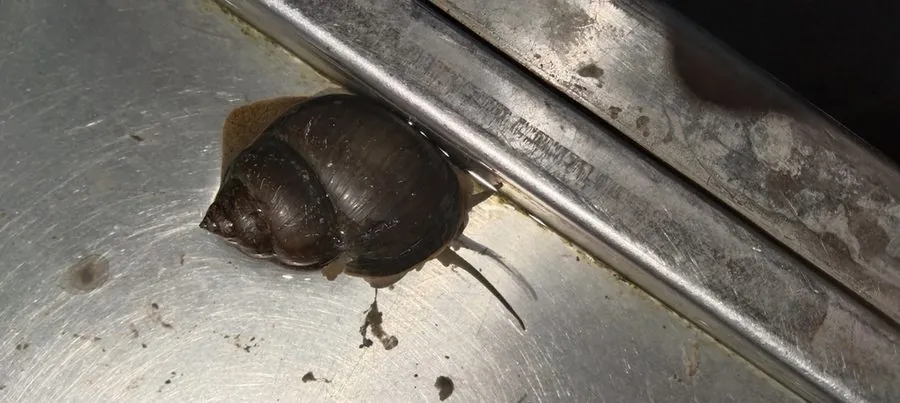

软体动物 · 动物界
中华圆田螺 Cipangopaludina cathayensis

中国淡水湖泊和稻田中常见的大型田螺，壳呈圆锥形、带厣，以藻类和腐殖质为食，是南方常见的食用螺类。
- 分类
- 门软体动物门纲腹足纲目中腹足目科田螺科属圆田螺属
- 栖息环境
- 湖泊、池塘、稻田和沟渠的静水或缓流水体，喜腐殖质丰富的水底
- 地理分布
- 中国长江流域及南方各地，以湖泊、池塘和稻田最为常见
- 保护级别
- 暂无评估；中国未列入国家重点保护野生动物名录
物种志
中华圆田螺的贝壳较大、壳质厚，呈圆锥形，壳面绿褐或黄褐色，有生长纹。壳口有角质的厣，遇到危险时可以像门一样把壳口封住。壳高一般 4–7 cm，宽 3–5 cm。
中华圆田螺分布于中国长江流域及南方各地的湖泊、池塘、稻田和沟渠，喜欢静水、腐殖质丰富的水体。它是杂食性动物，用齿舌刮食藻类、水生植物和腐殖质。中华圆田螺的繁殖方式比较特别：它是雌雄异体，但为卵胎生，雌螺直接产出小螺，而不是产卵。中华圆田螺是南方常见的食用螺类，肉质鲜美，可爆炒、煮汤，也是青鱼、鲤鱼等鱼类的食物。需要注意的是，它可能是某些寄生虫的中间宿主，食用时必须彻底煮熟。目前它没有IUCN 的正式评估，中国未将其列入国家重点保护野生动物名录。
形态与习性
- 食性杂食性，用齿舌刮食藻类、水生植物和腐殖质
- 壳高一般 4–7 cm
- 繁殖雌雄异体、卵胎生，雌螺直接产出小螺
- 栖息地湖泊、池塘、稻田和沟渠的静水或缓流水体
- 食用南方常见食用螺，肉质鲜美，可爆炒、煮汤
- 注意事项可能是寄生虫中间宿主，必须煮熟食用
趣味知识
- 中华圆田螺是卵胎生，雌螺直接产下小螺，而不是产卵。
- 它壳口有一片角质的厣，遇到危险时能像门一样关起来。
- 田螺是南方常见的食用螺，但可能携带寄生虫，必须煮熟后食用。